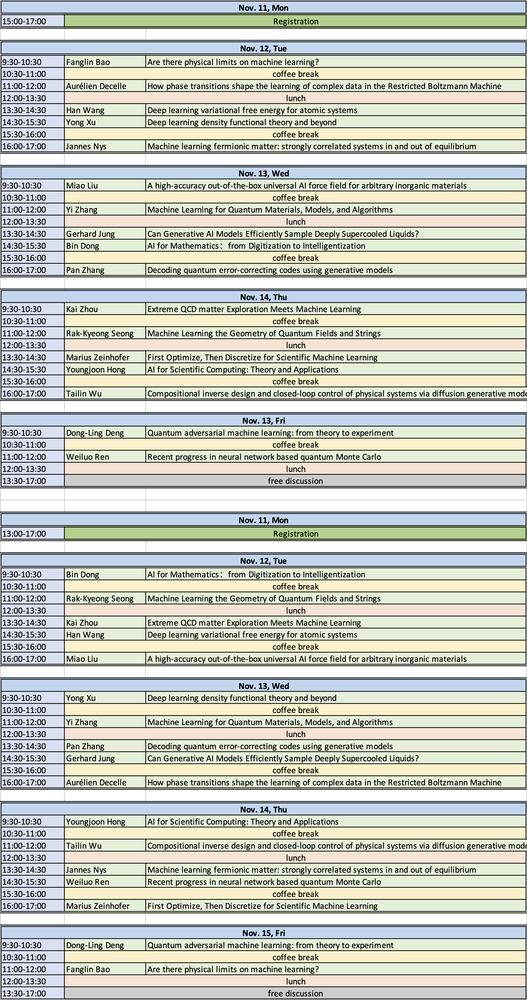

About the workshop
This workshop is organized by the Kavli Institute of Theoretical Sciences (KITS) of the Chinese Academy of Sciences. This workshop aims to provide i) a timely overview of the exploding field of AI for science with an emphasis on applications to the theoretical sciences; ii) a venue for researchers in AI for science to present and exchange ideas, and to identify future directions of disruptive research; and iii) an introduction for physicists to the plethora of cutting-edge ML techniques in the field of AI for science. The topics include: • AI for differential equations; AI for theoretical high energy physics; AI for quantum mechanics and quantum chemistry; AI for lattice field theory; and AI for inverse design in material science, biophysics, and engineering
Time and venue
The workshop will take place at KITS, Zhongguancun, Beijing from November 11 (registration day) till November 15, 2024.
Invited speakers
- Speker Name (Institution): title of talk
Program

Organizers
Wolfger Peelaers (HPE labs)
Lei Wang ()
Long Zhang ()
Xinan Zhou (Kavli ITS, University of Chinese Academy of Sciences)
Contact
Please email any questions you may have to the organizers: xinan.zhou@ucas.ac.cn